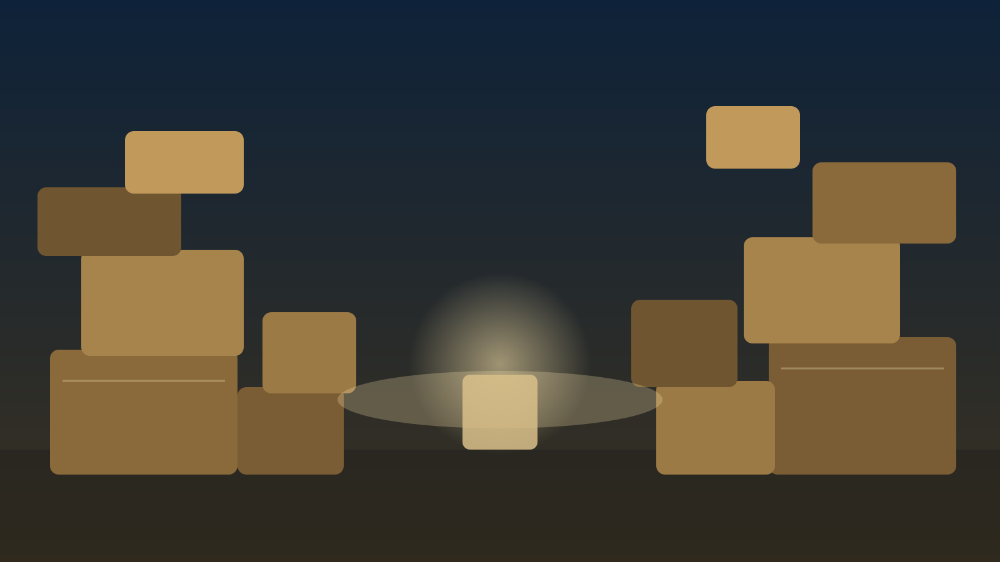

Trastorno de acumulación (Hoarding)
Dificultad persistente para descartar objetos, aunque no tengan valor real: qué es, cómo se diferencia de otros cuadros y cuándo consultar.
Qué es
El trastorno de acumulación se caracteriza por una dificultad persistente para descartar o desprenderse de pertenencias, independientemente de su valor real, y por el malestar que genera intentar hacerlo. Con el tiempo, los espacios de la casa se llenan de objetos al punto de no poder usarse para lo que fueron pensados (por ejemplo, no poder cocinar en la cocina o dormir en la cama). Puede aparecer a cualquier edad, aunque suele hacerse más notorio con los años.
Diferencias con el síndrome de Diógenes
Se confunden con frecuencia, pero no son lo mismo.
- El trastorno de acumulación es una entidad propia, centrada en la dificultad para descartar objetos y el apego a ellos, y puede darse en personas de cualquier edad con buen autocuidado personal.
- El síndrome de Diógenes describe un cuadro más amplio de abandono del autocuidado (higiene, alimentación, vínculos) junto con acumulación extrema, más frecuente en adultos mayores y muchas veces asociado a otros problemas de salud mental o cognitivos.
- Ambos pueden requerir intervención familiar y profesional, pero el enfoque y la urgencia pueden ser distintos según cuál predomine.
Señales frecuentes
El impacto se nota sobre todo en el uso real de los espacios y en la vida cotidiana.
- Acumulación progresiva de objetos que dificulta o impide el uso normal de habitaciones.
- Malestar intenso, ansiedad o irritabilidad ante la idea de tirar o donar pertenencias.
- Dificultad para tomar decisiones sobre qué guardar y qué descartar.
- Vergüenza o aislamiento social relacionado con el estado de la vivienda (evitar que otros entren a la casa).
- Conflictos familiares o de pareja por el espacio ocupado y la convivencia con la acumulación.
Cuándo consultar
Cuanto antes se aborda, más fácil suele ser trabajar sobre el patrón antes de que se agrave.
- La acumulación ya impide usar espacios básicos de la vivienda (cocina, baño, cama, salidas de emergencia).
- Hay riesgo para la seguridad: obstrucción de salidas, riesgo de incendio, plagas o problemas de higiene.
- Genera conflictos familiares importantes o aislamiento social sostenido.
- La persona reconoce el problema pero no logra avanzar sola, o lo niega pese al impacto evidente.
Qué puede ayudar
Ideas generales para empezar a ordenar el proceso. No reemplazan un tratamiento.
- Empezar por espacios pequeños y objetivos concretos (un cajón, una mesa), en vez de plantear "ordenar todo" de una vez.
- Evitar imponer una limpieza forzada sin acuerdo: suele generar más resistencia y ruptura del vínculo de confianza.
- Involucrar a la persona en cada decisión sobre qué se guarda y qué se descarta.
- Buscar acompañamiento profesional cuando el proceso se estanca o genera mucho conflicto familiar.
Plan breve
Un resumen en pasos para releer rápido si esto te resuena.
- Si hay riesgo de seguridad (obstrucción, incendio, plagas), priorizá resolver ese punto primero, con apoyo si hace falta.
- Elegí un espacio chico para empezar y avanzá de a poco, sin forzar una limpieza total.
- Registrá qué genera más malestar al descartar, para llevarlo a la consulta.
- Si el proceso se estanca o genera mucho conflicto, pedí una consulta profesional.
Recursos relacionados
Otros materiales del sitio que pueden complementar este tema.
¿Querés orientación profesional?
Si esto te resuena, la Central de Turnos puede ayudarte a coordinar una consulta.